แสดงรายการสินค้าและวัตถุดิบสำหรับการรับสินค้า
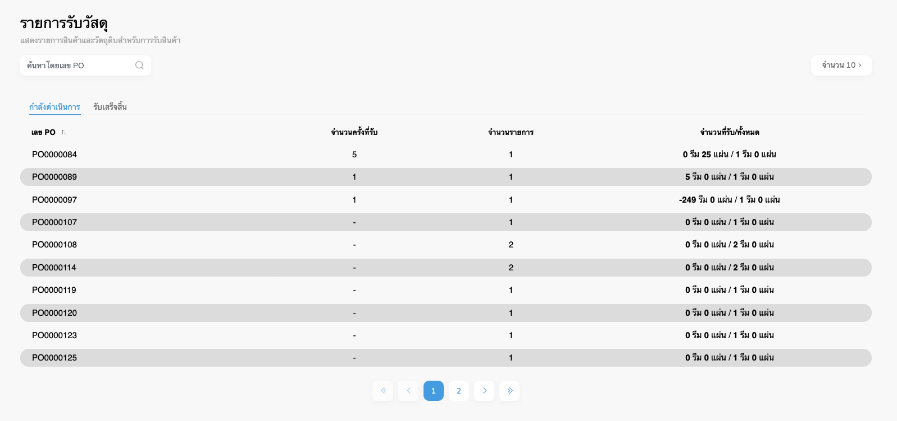
Figure 1: Receiving page
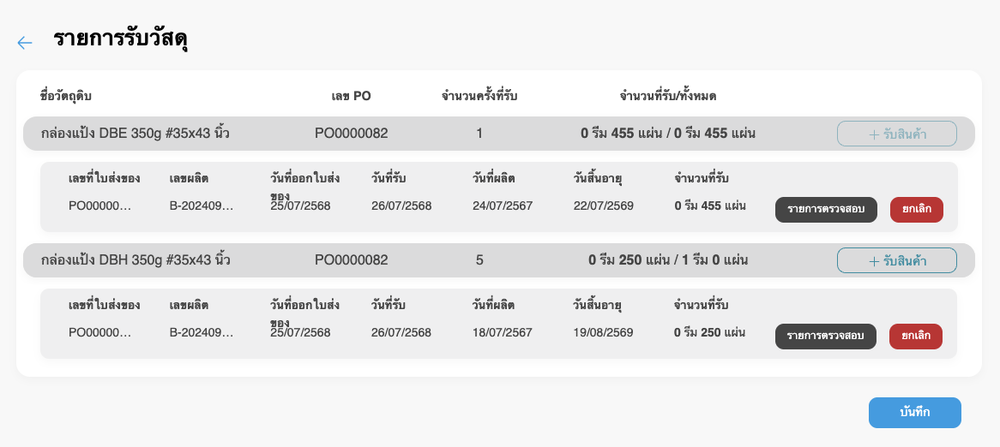
Figure 2: Material receiving page
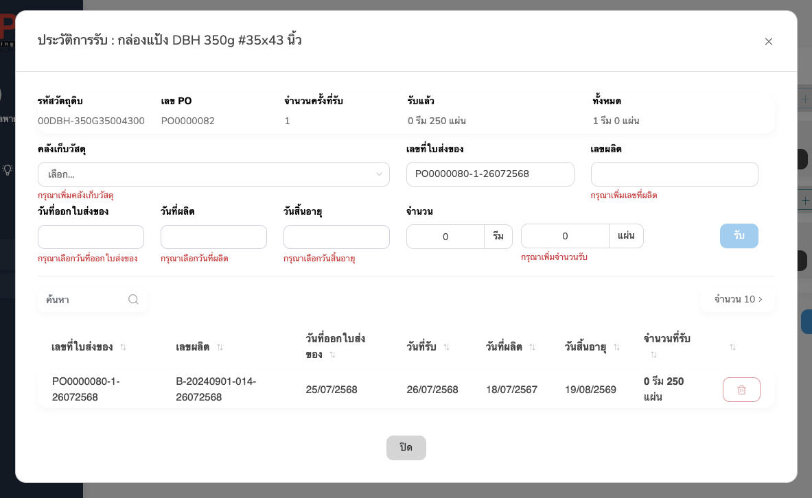
Figure 3: Receiving history modal
เลือกคลังเก็บวัสดุ กรอกเลขที่ใบส่งของ เลขผลิต วันที่ออกใบส่งของ วันที่ผลิต วันสิ้นอายุ และจำนวน แล้วกดปุ่มรับ
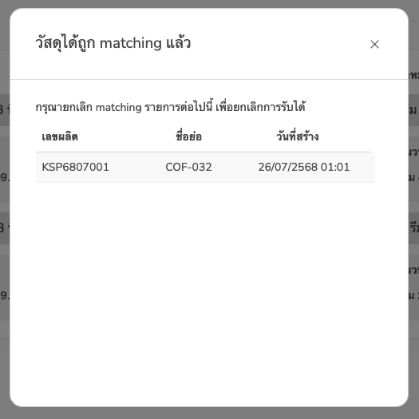
Figure 4: Receiving matched modal
ถ้ากดยกเลิกการรับวัสดุที่ถูก matching แล้ว จะแสดงรายการที่ต้องไปยกเลิก matching ก่อน จึงจะยกเลิกการรับนั้นได้
เพิ่มหรือแก้ไขคำสั่งซื้อ
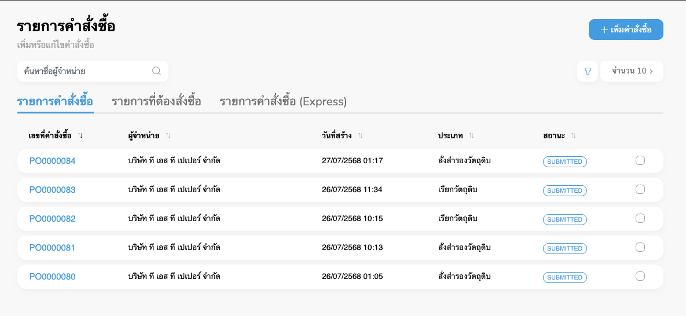
Figure 5: Purchase order page
แสดงตารางรายการของคำสั่งซื้อ ซื่งประกอบด้วย เลขที่คำสั่งซื้อ ผู้จำหน่าย วันที่สร้าง ประเภท และ สถานะ
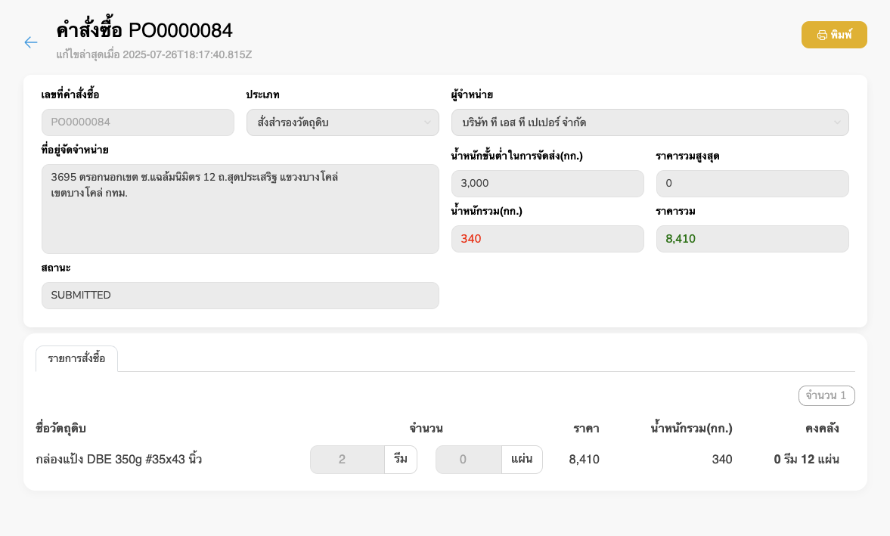
Figure 6: Purchase order detail
แสดงรายละเอียดของคำสั่งซื้อ
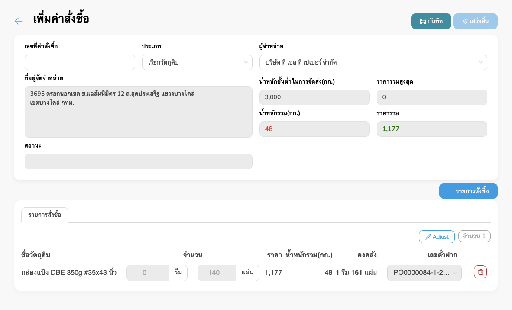
Figure 7: Add purchase order
กรอกรายละเอียดส่วนบน และเมื่อกดปุ่ม “+ รายการสั่งซื้อ” จะแสดง modal รายการวัตถุดิบต่างกันตามประเภทของคำสั่งซื้อ เมื่อเพิ่มรายการแล้วจึงกดบันทึก แล้วจะสามารถกดเสร็จสิ้นได้
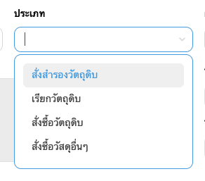
Figure 8: Purchase order type
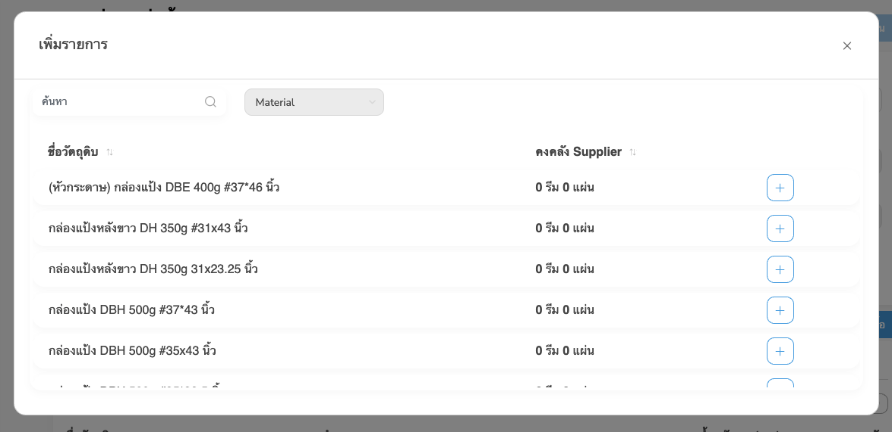
Figure 9: Add purchase order material modal PO01
กด + เลือกวัตถุดิบที่ต้องการ
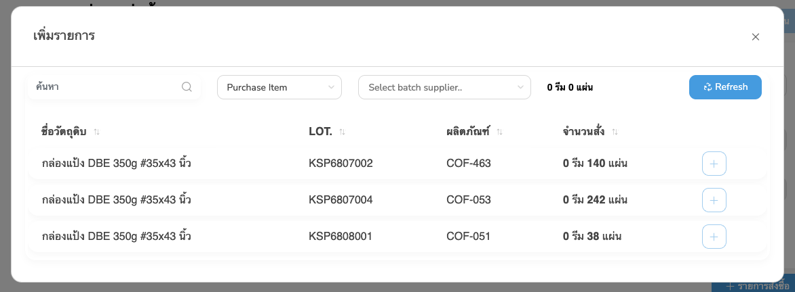
Figure 10: Add purchase order material modal PO02 purchase item
เลือกเป็น Purchase Item แล้วเลือก batch supplier และกด + เลือกวัตถุดิบที่ต้องการ
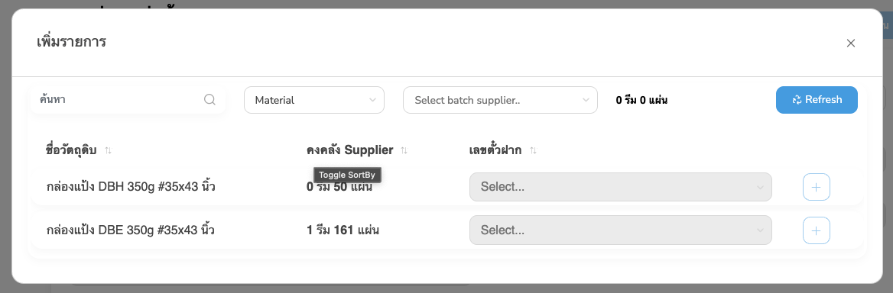
Figure 11: Add purchase order material modal PO02 material
เลือกเป็น Material แล้วเลือก batch supplier และกด + เลือกวัตถุดิบที่ต้องการ
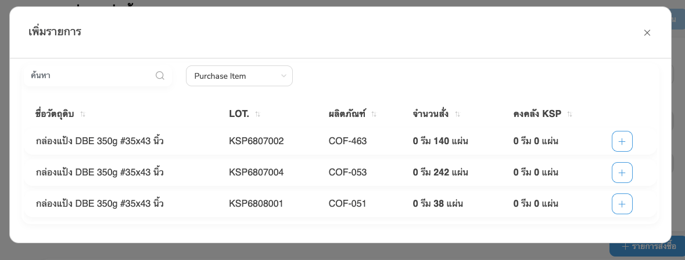
Figure 12: Add purchase order material modal PO03 purchase item
เลือกเป็น Purchase Item แล้วกด + เลือกวัตถุดิบที่ต้องการ
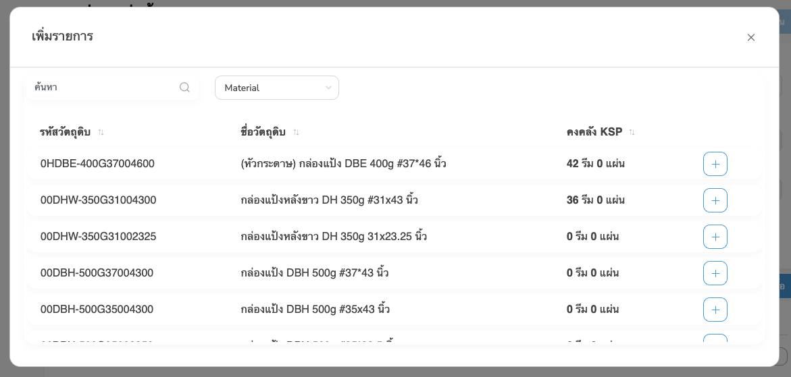
Figure 13: Add purchase order material modal PO03 material
เลือกเป็น Material แล้วกด + เลือกวัตถุดิบที่ต้องการ
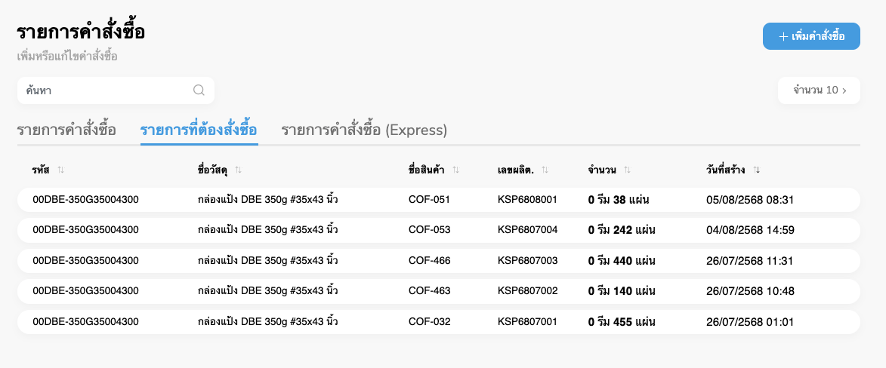
Figure 14: Purchase item tab
แสดงตารางรายการที่ต้องสั่งซื้อ ซื่งประกอบด้วย รหัส ชื่อวัสดุ ชื่อสินค้า เลขผลิต. จำนวน และวันที่สร้าง